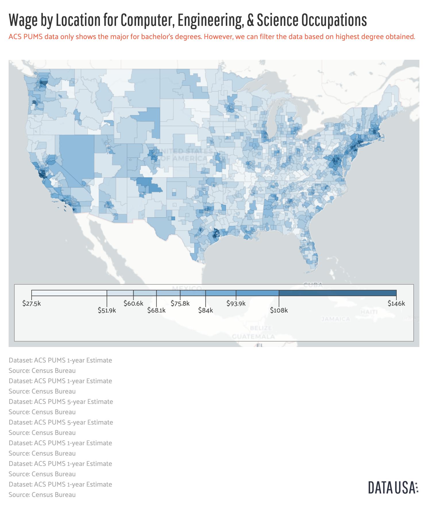

My Cause
My Cause is that the Computer Science can help me earning a good job in the future.
Although there are an unlimited number of rewarding career opportunities in computer science, many potential career changers are hesitant about this the field.
Often times, the issue results from misconceptions about computer science.
Here are some misunderstanding people usually have about my cause.
I. I have to Sit in a Cubicle and Code All Day.
However, only a few of them require sitting at a desk and coding all day. Regardless of whether you work at a startup or large organization, you will be an integral member of a team.
Checkout A Day In The Silicon Valley as an Engineer
This map shows the Public Use Microdata Areas (PUMAs) in the United States shaded by average annual wage for Computer, engineering, & science occupations.
Download the Dataset 